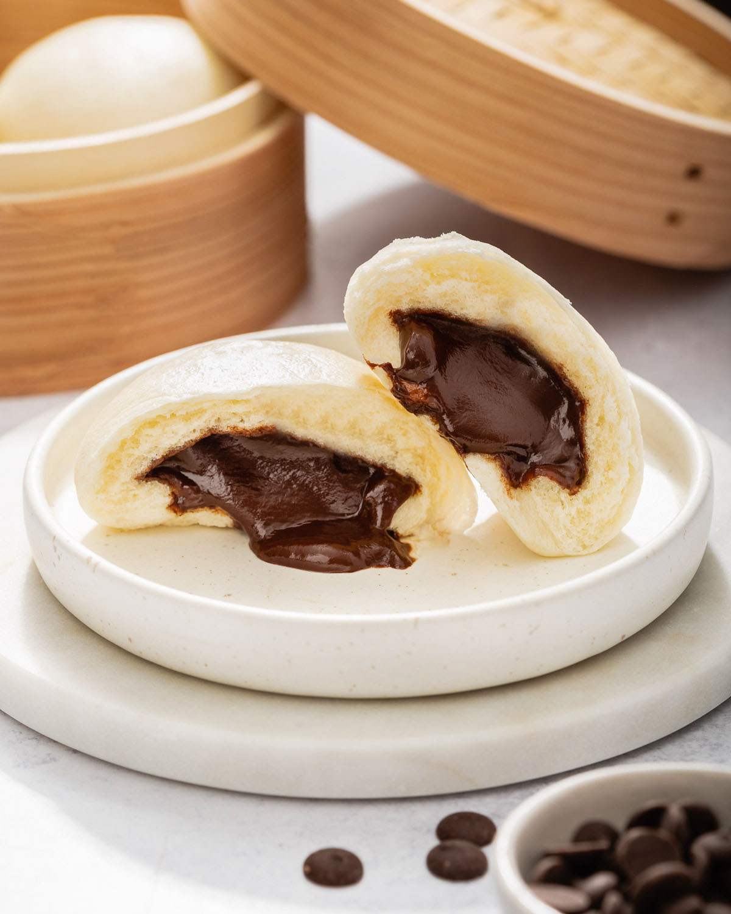

Buns

Ingredients
- 2 cups all-purpose flour
- 1/4 cup cocoa powder
- 1/4 cup granulated sugar
- 1 packet (about 2 1/4 teaspoons) instant yeast
- 1/2 teaspoon salt
- 3/4 cup warm milk (around 110°F or 45°C)
- 1/4 cup melted butter
- 1 egg
For the chocolate filling
- 1/2 cup chocolate chips (semi-sweet or your choice)
- 2 tablespoons butter
- 2 tablespoons powdered sugar
- 1 tablespoon cocoa powder
Instructions
- Prepare the dough
- Knead and Rise:
- Prepare the Filling:
- Shape the Buns:
- Roll and Cut:
- Second Rise:
- Bake:
- Cool and Serve: